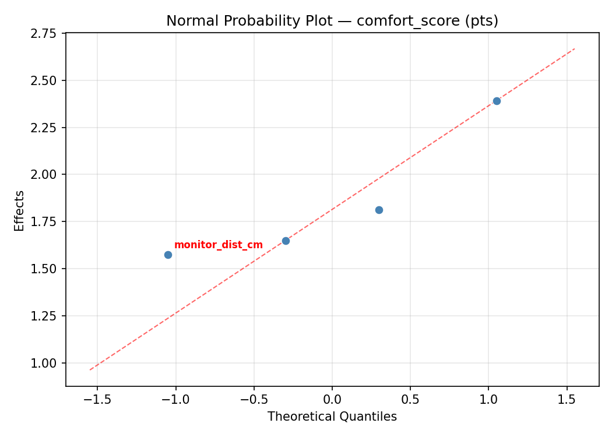
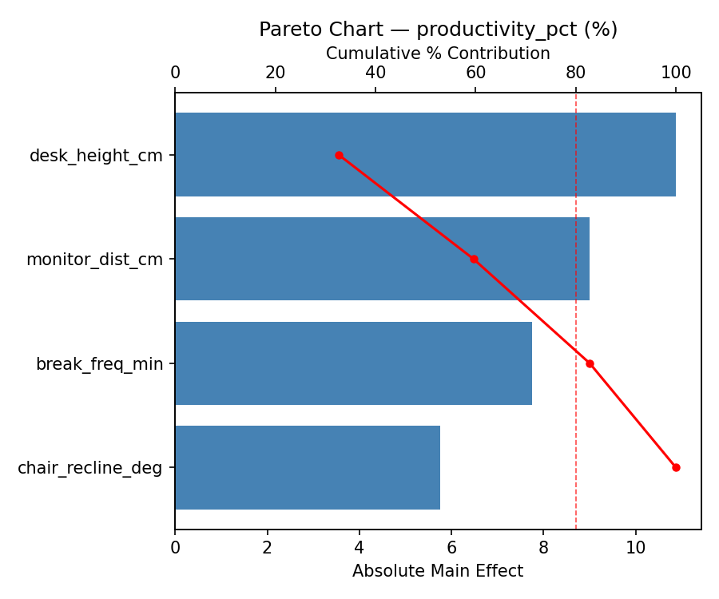
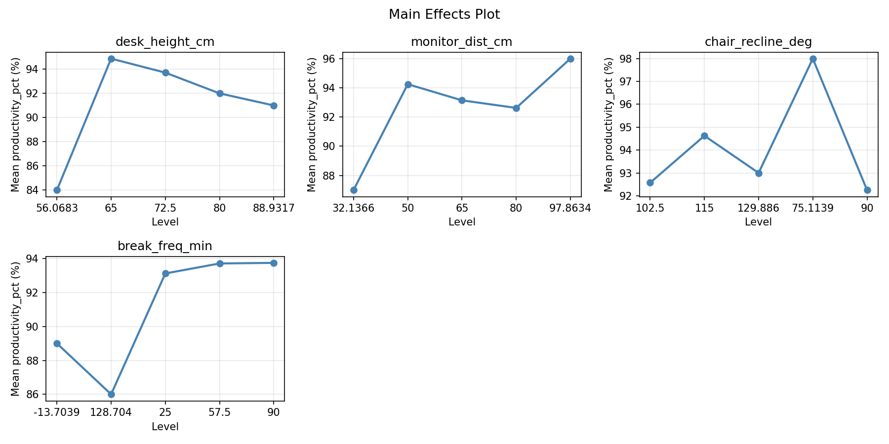
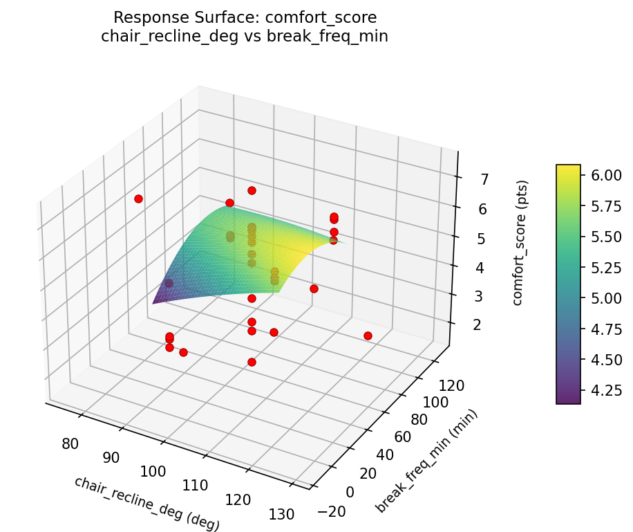
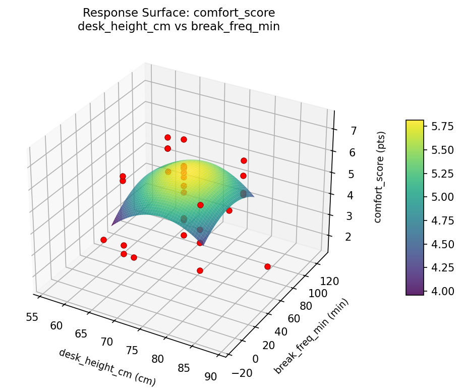
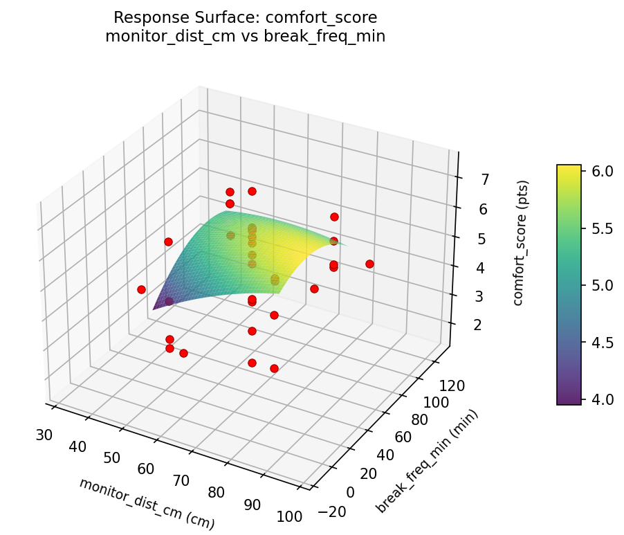
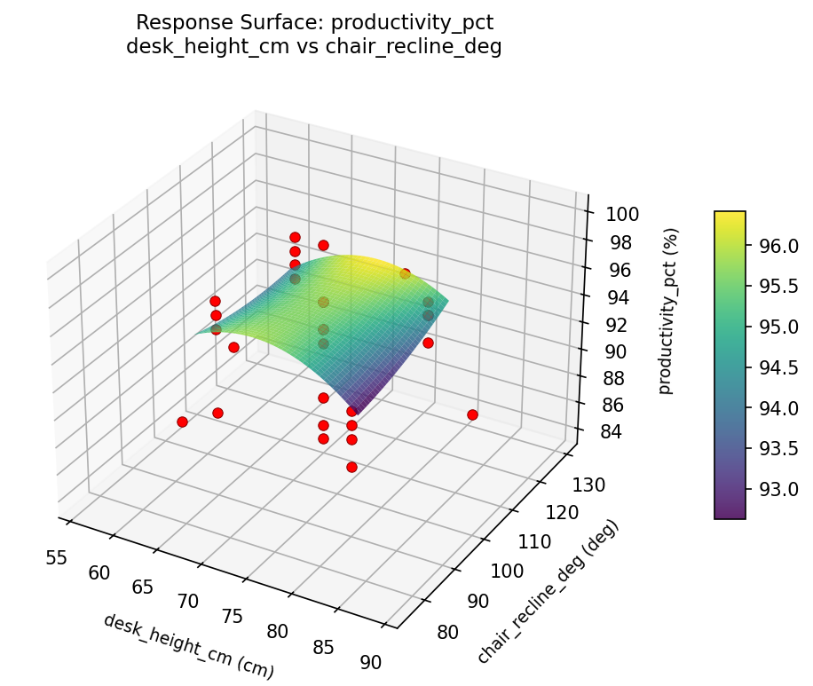
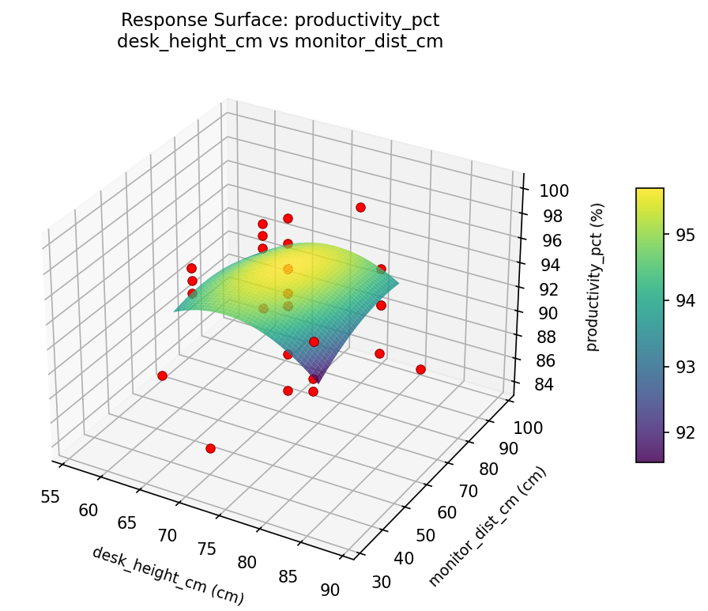

Summary
This experiment investigates ergonomic workstation setup. Central composite design to minimize discomfort and maximize productivity by tuning desk height, monitor distance, chair angle, and break frequency.
The design varies 4 factors: desk height cm (cm), ranging from 65 to 80, monitor dist cm (cm), ranging from 50 to 80, chair recline deg (deg), ranging from 90 to 115, and break freq min (min), ranging from 25 to 90. The goal is to optimize 2 responses: comfort score (pts) (maximize) and productivity pct (%) (maximize). Fixed conditions held constant across all runs include monitor size = 27in, chair type = ergonomic.
A Central Composite Design (CCD) was selected to fit a full quadratic response surface model, including curvature and interaction effects. With 4 factors this produces 32 runs including center points and axial (star) points that extend beyond the factorial range.
Quadratic response surface models were fitted to capture potential curvature and factor interactions. The RSM contour plots below visualize how pairs of factors jointly affect each response.
Key Findings
For comfort score, the most influential factors were break freq min (47.5%), monitor dist cm (27.8%), chair recline deg (14.5%). The best observed value was 7.4 (at desk height cm = 80, monitor dist cm = 50, chair recline deg = 115).
For productivity pct, the most influential factors were break freq min (57.9%), desk height cm (17.2%), chair recline deg (12.7%). The best observed value was 100.0 (at desk height cm = 80, monitor dist cm = 50, chair recline deg = 115).
Recommended Next Steps
- Run confirmation experiments at the predicted optimal settings to validate the model.
- Consider whether any fixed factors should be varied in a future study.
Experimental Setup
Factors
| Factor | Low | High | Unit |
|---|
desk_height_cm | 65 | 80 | cm |
monitor_dist_cm | 50 | 80 | cm |
chair_recline_deg | 90 | 115 | deg |
break_freq_min | 25 | 90 | min |
Fixed: monitor_size = 27in, chair_type = ergonomic
Responses
| Response | Direction | Unit |
|---|
comfort_score | ↑ maximize | pts |
productivity_pct | ↑ maximize | % |
Configuration
{
"metadata": {
"name": "Ergonomic Workstation Setup",
"description": "Central composite design to minimize discomfort and maximize productivity by tuning desk height, monitor distance, chair angle, and break frequency"
},
"factors": [
{
"name": "desk_height_cm",
"levels": [
"65",
"80"
],
"type": "continuous",
"unit": "cm"
},
{
"name": "monitor_dist_cm",
"levels": [
"50",
"80"
],
"type": "continuous",
"unit": "cm"
},
{
"name": "chair_recline_deg",
"levels": [
"90",
"115"
],
"type": "continuous",
"unit": "deg"
},
{
"name": "break_freq_min",
"levels": [
"25",
"90"
],
"type": "continuous",
"unit": "min"
}
],
"fixed_factors": {
"monitor_size": "27in",
"chair_type": "ergonomic"
},
"responses": [
{
"name": "comfort_score",
"optimize": "maximize",
"unit": "pts"
},
{
"name": "productivity_pct",
"optimize": "maximize",
"unit": "%"
}
],
"settings": {
"operation": "central_composite",
"test_script": "use_cases/111_ergonomic_workstation/sim.sh"
}
}
Experimental Matrix
The Central Composite Design produces 32 runs. Each row is one experiment with specific factor settings.
| Run | desk_height_cm | monitor_dist_cm | chair_recline_deg | break_freq_min |
|---|
| 1 | 72.5 | 65 | 102.5 | -13.7039 |
| 2 | 65 | 80 | 90 | 90 |
| 3 | 80 | 50 | 115 | 25 |
| 4 | 80 | 80 | 115 | 90 |
| 5 | 72.5 | 65 | 129.886 | 57.5 |
| 6 | 80 | 50 | 115 | 90 |
| 7 | 72.5 | 32.1366 | 102.5 | 57.5 |
| 8 | 65 | 80 | 115 | 25 |
| 9 | 72.5 | 65 | 102.5 | 57.5 |
| 10 | 80 | 80 | 90 | 25 |
| 11 | 72.5 | 65 | 102.5 | 57.5 |
| 12 | 80 | 50 | 90 | 90 |
| 13 | 72.5 | 65 | 102.5 | 57.5 |
| 14 | 80 | 80 | 115 | 25 |
| 15 | 72.5 | 65 | 75.1139 | 57.5 |
| 16 | 56.0683 | 65 | 102.5 | 57.5 |
| 17 | 72.5 | 65 | 102.5 | 57.5 |
| 18 | 65 | 50 | 90 | 90 |
| 19 | 80 | 80 | 90 | 90 |
| 20 | 72.5 | 65 | 102.5 | 57.5 |
| 21 | 65 | 50 | 115 | 25 |
| 22 | 72.5 | 65 | 102.5 | 57.5 |
| 23 | 88.9317 | 65 | 102.5 | 57.5 |
| 24 | 65 | 50 | 115 | 90 |
| 25 | 72.5 | 65 | 102.5 | 57.5 |
| 26 | 65 | 80 | 90 | 25 |
| 27 | 72.5 | 65 | 102.5 | 128.704 |
| 28 | 72.5 | 65 | 102.5 | 57.5 |
| 29 | 80 | 50 | 90 | 25 |
| 30 | 72.5 | 97.8634 | 102.5 | 57.5 |
| 31 | 65 | 50 | 90 | 25 |
| 32 | 65 | 80 | 115 | 90 |
Step-by-Step Workflow
1
Preview the design
$ python doe.py info --config use_cases/111_ergonomic_workstation/config.json
2
Generate the runner script
$ python doe.py generate --config use_cases/111_ergonomic_workstation/config.json \
--output use_cases/111_ergonomic_workstation/results/run.sh --seed 42
3
Execute the experiments
$ bash use_cases/111_ergonomic_workstation/results/run.sh
4
Analyze results
$ python doe.py analyze --config use_cases/111_ergonomic_workstation/config.json
5
Get optimization recommendations
$ python doe.py optimize --config use_cases/111_ergonomic_workstation/config.json
6
Multi-objective optimization
With 2 competing responses, use --multi to find the best compromise via Derringer–Suich desirability.
$ python doe.py optimize --config use_cases/111_ergonomic_workstation/config.json --multi
7
Generate the HTML report
$ python doe.py report --config use_cases/111_ergonomic_workstation/config.json \
--output use_cases/111_ergonomic_workstation/results/report.html
Features Exercised
| Feature | Value |
|---|
| Design type | central_composite |
| Factor types | continuous (all 4) |
| Arg style | double-dash |
| Responses | 2 (comfort_score ↑, productivity_pct ↑) |
| Total runs | 32 |
Analysis Results
Generated from actual experiment runs using the DOE Helper Tool.
Response: comfort_score
Top factors: break_freq_min (47.5%), monitor_dist_cm (27.8%), chair_recline_deg (14.5%).
ANOVA
| Source | DF | SS | MS | F | p-value |
|---|
| Source | DF | SS | MS | F | p-value |
| desk_height_cm | 4 | 2.0229 | 0.5057 | 0.215 | 0.9260 |
| monitor_dist_cm | 4 | 10.3154 | 2.5789 | 1.096 | 0.3941 |
| chair_recline_deg | 4 | 5.7561 | 1.4390 | 0.612 | 0.6607 |
| break_freq_min | 4 | 19.3025 | 4.8256 | 2.051 | 0.1385 |
| Lack | of | Fit | 8 | 13.0665 | 1.6333 |
| Pure | Error | 7 | 16.4688 | | |
| Error | 15 | 29.5352 | 2.3527 | | |
| Total | 31 | 66.9322 | 2.1591 | | |
Pareto Chart

Main Effects Plot

Normal Probability Plot of Effects

Half-Normal Plot of Effects

Model Diagnostics

Response: productivity_pct
Top factors: break_freq_min (57.9%), desk_height_cm (17.2%), chair_recline_deg (12.7%).
ANOVA
| Source | DF | SS | MS | F | p-value |
|---|
| Source | DF | SS | MS | F | p-value |
| desk_height_cm | 4 | 22.4464 | 5.6116 | 0.494 | 0.7403 |
| monitor_dist_cm | 4 | 16.4107 | 4.1027 | 0.361 | 0.8323 |
| chair_recline_deg | 4 | 28.0179 | 7.0045 | 0.617 | 0.6573 |
| break_freq_min | 4 | 161.2679 | 40.3170 | 3.550 | 0.0314 |
| Lack | of | Fit | 8 | 111.2321 | 13.9040 |
| Pure | Error | 7 | 79.5000 | | |
| Error | 15 | 190.7321 | 11.3571 | | |
| Total | 31 | 418.8750 | 13.5121 | | |
Pareto Chart

Main Effects Plot

Normal Probability Plot of Effects

Half-Normal Plot of Effects

Model Diagnostics

Response Surface Plots
3D surfaces fitted with quadratic RSM. Red dots are observed data points.
comfort score chair recline deg vs break freq min

comfort score desk height cm vs break freq min

comfort score desk height cm vs chair recline deg

comfort score desk height cm vs monitor dist cm

comfort score monitor dist cm vs break freq min

comfort score monitor dist cm vs chair recline deg

productivity pct chair recline deg vs break freq min

productivity pct desk height cm vs break freq min

productivity pct desk height cm vs chair recline deg

productivity pct desk height cm vs monitor dist cm

productivity pct monitor dist cm vs break freq min

productivity pct monitor dist cm vs chair recline deg

Multi-Objective Optimization
When responses compete, Derringer–Suich desirability finds the best compromise.
Each response is scaled to a 0–1 desirability, then combined via a weighted geometric mean.
Overall Desirability
D = 0.9545
Per-Response Desirability
| Response | Weight | Desirability | Predicted | Dir |
|---|
comfort_score |
1.5 |
|
7.40 0.9545 7.40 pts |
↑ |
productivity_pct |
1.5 |
|
100.00 0.9545 100.00 % |
↑ |
Recommended Settings
| Factor | Value |
|---|
desk_height_cm | 88.9317 cm |
monitor_dist_cm | 65 cm |
chair_recline_deg | 102.5 deg |
break_freq_min | 57.5 min |
Source: from observed run #1
Trade-off Summary
Sacrifice = how much worse than single-objective best.
| Response | Predicted | Best Observed | Sacrifice |
|---|
productivity_pct | 100.00 | 100.00 | +0.00 |
Top 3 Runs by Desirability
| Run | D | Factor Settings |
|---|
| #14 | 0.7946 | desk_height_cm=72.5, monitor_dist_cm=65, chair_recline_deg=75.1139, break_freq_min=57.5 |
| #5 | 0.7466 | desk_height_cm=65, monitor_dist_cm=50, chair_recline_deg=115, break_freq_min=25 |
Model Quality
| Response | R² | Type |
|---|
productivity_pct | 0.0843 | linear |
Full Multi-Objective Output
============================================================
MULTI-OBJECTIVE OPTIMIZATION
Method: Derringer-Suich Desirability Function
============================================================
Overall desirability: D = 0.9545
Response Weight Desirability Predicted Direction
---------------------------------------------------------------------
comfort_score 1.5 0.9545 7.40 pts ↑
productivity_pct 1.5 0.9545 100.00 % ↑
Recommended settings:
desk_height_cm = 88.9317 cm
monitor_dist_cm = 65 cm
chair_recline_deg = 102.5 deg
break_freq_min = 57.5 min
(from observed run #1)
Trade-off summary:
comfort_score: 7.40 (best observed: 7.40, sacrifice: +0.00)
productivity_pct: 100.00 (best observed: 100.00, sacrifice: +0.00)
Model quality:
comfort_score: R² = 0.0225 (linear)
productivity_pct: R² = 0.0843 (linear)
Top 3 observed runs by overall desirability:
1. Run #1 (D=0.9545): desk_height_cm=88.9317, monitor_dist_cm=65, chair_recline_deg=102.5, break_freq_min=57.5
2. Run #14 (D=0.7946): desk_height_cm=72.5, monitor_dist_cm=65, chair_recline_deg=75.1139, break_freq_min=57.5
3. Run #5 (D=0.7466): desk_height_cm=65, monitor_dist_cm=50, chair_recline_deg=115, break_freq_min=25
Full Analysis Output
=== Main Effects: comfort_score ===
Factor Effect Std Error % Contribution
--------------------------------------------------------------
break_freq_min 5.8000 0.2598 47.5%
monitor_dist_cm 3.4000 0.2598 27.8%
chair_recline_deg 1.7714 0.2598 14.5%
desk_height_cm 1.2500 0.2598 10.2%
=== ANOVA Table: comfort_score ===
Source DF SS MS F p-value
-----------------------------------------------------------------------------
desk_height_cm 4 2.0229 0.5057 0.215 0.9260
monitor_dist_cm 4 10.3154 2.5789 1.096 0.3941
chair_recline_deg 4 5.7561 1.4390 0.612 0.6607
break_freq_min 4 19.3025 4.8256 2.051 0.1385
Lack of Fit 8 13.0665 1.6333 0.694 0.6913
Pure Error 7 16.4688 2.3527
Error 15 29.5352 2.3527
Total 31 66.9322 2.1591
=== Summary Statistics: comfort_score ===
desk_height_cm:
Level N Mean Std Min Max
------------------------------------------------------------
56.0683 1 3.7000 0.0000 3.7000 3.7000
65 8 4.9500 1.3918 2.9000 6.1000
72.5 14 4.7571 1.8371 1.6000 7.4000
80 8 4.8250 1.0334 2.7000 6.1000
88.9317 1 4.0000 0.0000 4.0000 4.0000
monitor_dist_cm:
Level N Mean Std Min Max
------------------------------------------------------------
32.1366 1 5.9000 0.0000 5.9000 5.9000
50 8 4.4125 1.1716 2.7000 6.1000
65 14 4.7071 1.7349 1.6000 7.4000
80 8 5.3625 1.0609 2.9000 6.1000
97.8634 1 2.5000 0.0000 2.5000 2.5000
chair_recline_deg:
Level N Mean Std Min Max
------------------------------------------------------------
102.5 14 4.4286 1.7578 1.6000 7.4000
115 8 4.8125 1.0035 2.9000 5.9000
129.886 1 6.2000 0.0000 6.2000 6.2000
75.1139 1 6.1000 0.0000 6.1000 6.1000
90 8 4.9625 1.4121 2.7000 6.1000
break_freq_min:
Level N Mean Std Min Max
------------------------------------------------------------
-13.7039 1 1.6000 0.0000 1.6000 1.6000
128.704 1 7.4000 0.0000 7.4000 7.4000
25 8 4.5375 1.2153 2.9000 6.1000
57.5 14 4.6643 1.4804 2.2000 6.2000
90 8 5.2375 1.1211 2.7000 6.1000
=== Main Effects: productivity_pct ===
Factor Effect Std Error % Contribution
--------------------------------------------------------------
break_freq_min 16.0000 0.6498 57.9%
desk_height_cm 4.7500 0.6498 17.2%
chair_recline_deg 3.5000 0.6498 12.7%
monitor_dist_cm 3.3750 0.6498 12.2%
=== ANOVA Table: productivity_pct ===
Source DF SS MS F p-value
-----------------------------------------------------------------------------
desk_height_cm 4 22.4464 5.6116 0.494 0.7403
monitor_dist_cm 4 16.4107 4.1027 0.361 0.8323
chair_recline_deg 4 28.0179 7.0045 0.617 0.6573
break_freq_min 4 161.2679 40.3170 3.550 0.0314
Lack of Fit 8 111.2321 13.9040 1.224 0.4013
Pure Error 7 79.5000 11.3571
Error 15 190.7321 11.3571
Total 31 418.8750 13.5121
=== Summary Statistics: productivity_pct ===
desk_height_cm:
Level N Mean Std Min Max
------------------------------------------------------------
56.0683 1 93.0000 0.0000 93.0000 93.0000
65 8 93.7500 3.8452 87.0000 98.0000
72.5 14 93.4286 4.2556 84.0000 100.0000
80 8 92.7500 2.8661 88.0000 97.0000
88.9317 1 89.0000 0.0000 89.0000 89.0000
monitor_dist_cm:
Level N Mean Std Min Max
------------------------------------------------------------
32.1366 1 94.0000 0.0000 94.0000 94.0000
50 8 92.6250 4.0333 87.0000 98.0000
65 14 92.8571 4.3298 84.0000 100.0000
80 8 93.8750 2.5319 89.0000 97.0000
97.8634 1 96.0000 0.0000 96.0000 96.0000
chair_recline_deg:
Level N Mean Std Min Max
------------------------------------------------------------
102.5 14 92.7143 4.2504 84.0000 100.0000
115 8 94.0000 2.8785 89.0000 97.0000
129.886 1 96.0000 0.0000 96.0000 96.0000
75.1139 1 96.0000 0.0000 96.0000 96.0000
90 8 92.5000 3.7417 87.0000 98.0000
break_freq_min:
Level N Mean Std Min Max
------------------------------------------------------------
-13.7039 1 84.0000 0.0000 84.0000 84.0000
128.704 1 100.0000 0.0000 100.0000 100.0000
25 8 91.8750 3.3139 87.0000 95.0000
57.5 14 93.2857 3.0742 86.0000 96.0000
90 8 94.6250 2.8754 91.0000 98.0000
Optimization Recommendations
=== Optimization: comfort_score ===
Direction: maximize
Best observed run: #1
desk_height_cm = 80
monitor_dist_cm = 50
chair_recline_deg = 115
break_freq_min = 25
Value: 7.4
RSM Model (linear, R² = 0.3532, Adj R² = 0.2574):
Coefficients:
intercept +4.7656
desk_height_cm +0.3771
monitor_dist_cm -0.2785
chair_recline_deg +0.7119
break_freq_min -0.4437
RSM Model (quadratic, R² = 0.6876, Adj R² = 0.4304):
Coefficients:
intercept +5.4543
desk_height_cm +0.3771
monitor_dist_cm -0.2785
chair_recline_deg +0.7119
break_freq_min -0.4437
desk_height_cm*monitor_dist_cm -0.1438
desk_height_cm*chair_recline_deg +0.3563
desk_height_cm*break_freq_min -0.2688
monitor_dist_cm*chair_recline_deg -0.7438
monitor_dist_cm*break_freq_min -0.1437
chair_recline_deg*break_freq_min -0.3438
desk_height_cm^2 -0.2464
monitor_dist_cm^2 -0.2673
chair_recline_deg^2 -0.0173
break_freq_min^2 -0.3298
Curvature analysis:
break_freq_min coef=-0.3298 concave (has a maximum)
monitor_dist_cm coef=-0.2673 concave (has a maximum)
desk_height_cm coef=-0.2464 concave (has a maximum)
chair_recline_deg coef=-0.0173 negligible curvature
Notable interactions:
monitor_dist_cm*chair_recline_deg coef=-0.7438 (antagonistic)
desk_height_cm*chair_recline_deg coef=+0.3563 (synergistic)
chair_recline_deg*break_freq_min coef=-0.3438 (antagonistic)
Predicted optimum (from quadratic model, at observed points):
desk_height_cm = 80
monitor_dist_cm = 50
chair_recline_deg = 115
break_freq_min = 25
Predicted value: 8.1172
Surface optimum (via L-BFGS-B, quadratic model):
desk_height_cm = 80
monitor_dist_cm = 50
chair_recline_deg = 115
break_freq_min = 25
Predicted value: 8.1172
Model quality: Moderate fit — use predictions directionally, not precisely.
Factor importance:
1. break_freq_min (effect: 4.5, contribution: 34.1%)
2. monitor_dist_cm (effect: 3.3, contribution: 25.0%)
3. desk_height_cm (effect: 2.9, contribution: 22.0%)
4. chair_recline_deg (effect: 2.5, contribution: 18.9%)
=== Optimization: productivity_pct ===
Direction: maximize
Best observed run: #1
desk_height_cm = 80
monitor_dist_cm = 50
chair_recline_deg = 115
break_freq_min = 25
Value: 100.0
RSM Model (linear, R² = 0.3559, Adj R² = 0.2604):
Coefficients:
intercept +93.1875
desk_height_cm +0.0298
monitor_dist_cm +0.1637
chair_recline_deg +2.2472
break_freq_min -0.8633
RSM Model (quadratic, R² = 0.7392, Adj R² = 0.5245):
Coefficients:
intercept +94.0966
desk_height_cm +0.0298
monitor_dist_cm +0.1637
chair_recline_deg +2.2472
break_freq_min -0.8633
desk_height_cm*monitor_dist_cm -0.1250
desk_height_cm*chair_recline_deg +1.5000
desk_height_cm*break_freq_min -1.1250
monitor_dist_cm*chair_recline_deg -1.8750
monitor_dist_cm*break_freq_min +0.0000
chair_recline_deg*break_freq_min -0.3750
desk_height_cm^2 -0.3362
monitor_dist_cm^2 +0.3930
chair_recline_deg^2 -0.3362
break_freq_min^2 -0.8570
Curvature analysis:
break_freq_min coef=-0.8570 concave (has a maximum)
monitor_dist_cm coef=+0.3930 convex (has a minimum)
desk_height_cm coef=-0.3362 concave (has a maximum)
chair_recline_deg coef=-0.3362 concave (has a maximum)
Notable interactions:
monitor_dist_cm*chair_recline_deg coef=-1.8750 (antagonistic)
desk_height_cm*chair_recline_deg coef=+1.5000 (synergistic)
desk_height_cm*break_freq_min coef=-1.1250 (antagonistic)
chair_recline_deg*break_freq_min coef=-0.3750 (antagonistic)
Predicted optimum (from quadratic model, at observed points):
desk_height_cm = 80
monitor_dist_cm = 50
chair_recline_deg = 115
break_freq_min = 25
Predicted value: 100.9368
Surface optimum (via L-BFGS-B, quadratic model):
desk_height_cm = 80
monitor_dist_cm = 50
chair_recline_deg = 115
break_freq_min = 25
Predicted value: 100.9368
Model quality: Good fit — general trends are captured, some noise remains.
Factor importance:
1. break_freq_min (effect: 11.0, contribution: 42.0%)
2. chair_recline_deg (effect: 8.0, contribution: 30.5%)
3. desk_height_cm (effect: 4.0, contribution: 15.3%)
4. monitor_dist_cm (effect: 3.2, contribution: 12.3%)